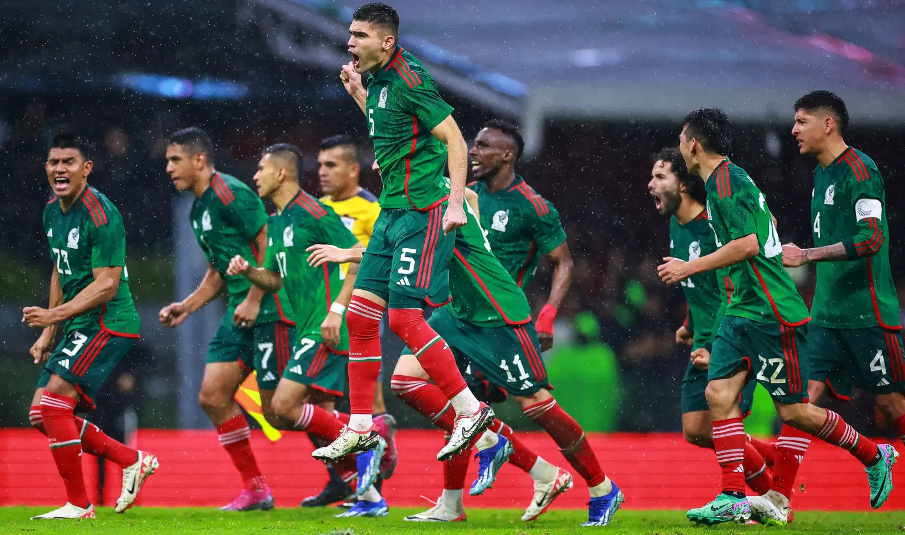

México en la Copa Mundial de la FIFA 26™: Calendario, estadios y partidos.
El Estadio Azteca de Ciudad de México acogerá dos partidos y el Estadio Guadalajara uno durante la fase de grupos de los anfitriones.

El país anfitrión, México, inaugurará la mayor edición de la historia de la Copa Mundial de la FIFA 26™ el jueves 11 de junio de 2026 en el
Estadio Azteca de Ciudad de México y disputará sus tres partidos de la fase de grupos en casa.
El calendario completo de partidos de la Copa Mundial de la FIFA 26™ más grande de la historia ya ha sido desvelado,
lo que da el marco para el torneo de 104 partidos en el que participarán 48 equipos repartidos en 16 sedes de tres países: Canadá, México y Estados Unidos.
El Tri tendrá el honor de dar el pistoletazo de salida al torneo en su capital, en la histórica sede que albergó
la fase final de la Copa Mundial y los partidos inaugurales de 1970 y 1986.